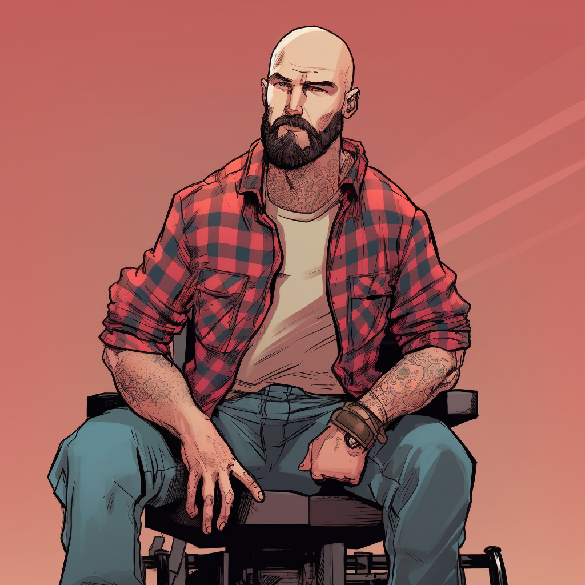
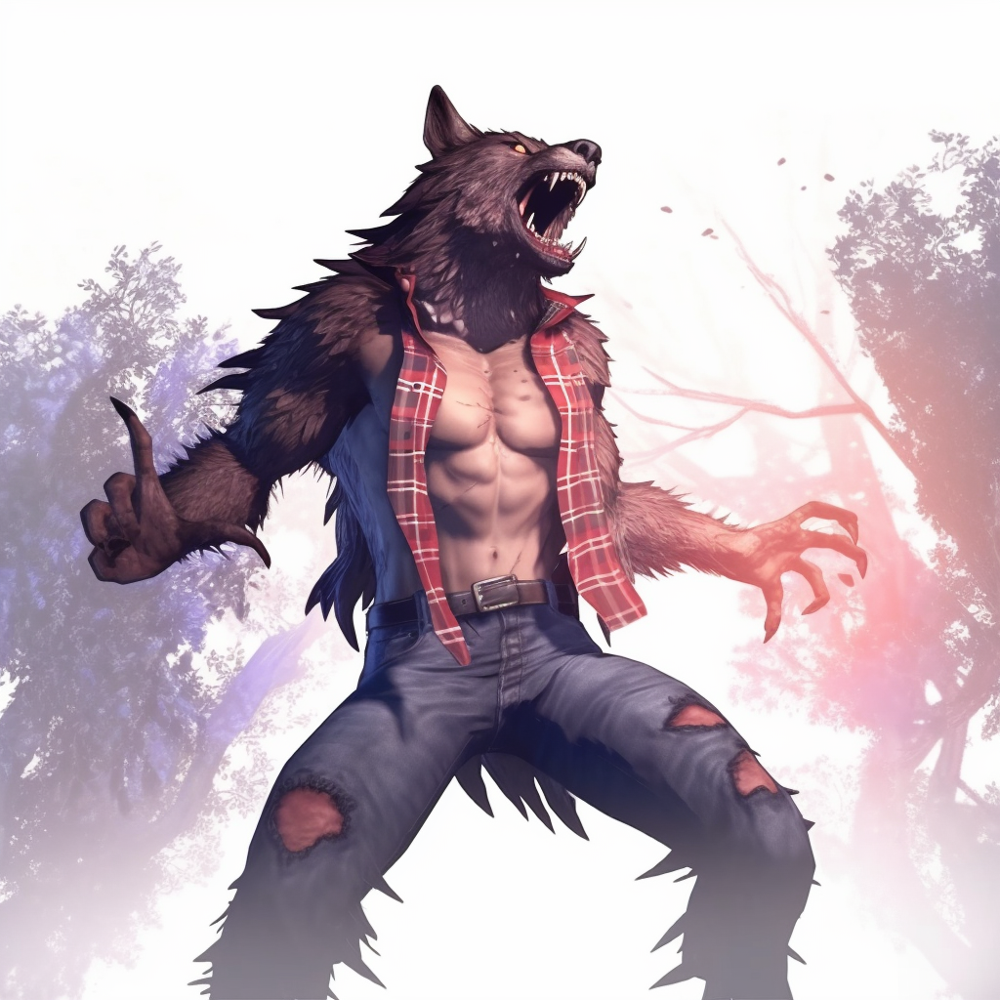

The gap between his life as he dreamed it would be, and the state of the world and his life as it was, tormented Rhys — but each time he shoved those feelings under and focused on showing up for his family.
— from the recordRhys is a man who has spent two decades being compressed. A punk kid from the Saskatchewan prairies who believed the world could be different. A bassist who toured with bands that meant something. An activist who put his body in front of history — and lost the use of his legs for it. A father, a husband, a helpdesk drone. A man who had learned, methodically and at great cost, to hold down the rage.
He had gotten very good at that. Too good, maybe. And then the car hit, and Gwen went limp, and his children screamed, and something in him that had been coiled for twenty years finally let go.
Rhys is not a man who wanted power. He is a man who had given up on the idea that he was allowed to want anything for himself. The Garou forms have returned to him something he did not even know he had lost: the capacity to act, to matter physically, to be dangerous. That terrifies him in ways he has not finished processing.
| Gift / Rite | Pool | Cost | Notes |
|---|---|---|---|
| Hare's Leap | Strength + Glory | Rage | 3m horizontal or 2m vertical per success |
| Sight from Beyond | Intelligence + Wisdom | — | Prophetic visions; first used in Session One to locate Keith & Lynn |
| Porcupine's Reprisal | — | Rage | Superficial damage up to Glory |
| Forgetful Record | Wisdom + Investigation | — | pg. 182 |
Rhys is wheelchair-bound in homid form only. Every other form restores full mobility — a fact he has not fully come to terms with.
The central psychological fact of Rhys is twenty years of managed impotence. He is politically conscious, emotionally intelligent, and has enormous amounts of rage that he has trained himself to suppress. He is excellent at suppressing it. The suppression has been good for his family and costly to himself.
The Garou forms have done two things: they have given him back his legs, and they have given him back the capacity for violence. He does not know yet whether these are gifts or temptations. He suspects the answer is both.
Rhys has felt incredibly disempowered and overwhelmed. The incredible power of the Garou forms has given him an outlet for the years of pent-up rage at the world and at his impotence. He has not yet resolved whether using that outlet is healing or relapse into something he does not want to be.
Nurse. From Laramie. Did not pity him. Argued with him. Was unconscious at the accident. Was up and about the next day when Rhys checked on the family in lupus form. He does not know if there has been a funeral. He does not know if they think he survived. He does not know if going back would help or hurt.
Seven years old. She called Miles in from the yard without seeing Rhys in the bushes. She manages the household in small ways that neither parent fully acknowledges. She drew a picture of the accident — Rhys in crinos form — and threw it in the trash. It was not monstrous. It was matter-of-fact.
Four years old. Nonverbal. Autistic. He saw Rhys in lupus form in the yard, stood up, and walked toward him. He touched Rhys's snout. He was not afraid. This was the one moment in Session One where Rhys felt something other than dread.
Rhys threw him across the highway. He does not know if the man is alive. He has not asked anyone to check. He is aware he has not asked and is aware of what that awareness costs him.
He hasn't played bass in eleven years. His calluses are gone. He doesn't talk about this.
He cannot go back the way he came. He does not know if he can go back at all. Miles touched his snout. Molly drew the picture. Whether his family would accept what he is — or whether contact with them puts them at greater risk from whatever the Wyrm is building in Laramie — is the thread that will pull at everything else.
A black cloud. Devil's Playground destroyed by lightning. Three seedlings. He asked the spiders whether the seeds predate the disaster. The answer was that the roots precede the caern's destruction — but it's unclear if destruction is a necessary condition for growth. This will haunt him. He is the kind of man who sits with an ambiguous answer for years before acting on it.
He has Sight from Beyond. He was drawn to the pattern-spider in the Umbra without being taught to be. His Insight and Subterfuge scores (both at 4) suggest a man who has always been able to read people and situations more precisely than he lets on. The Theurge's gifts suit the intelligence of someone who spent two decades watching power operate from the outside.
He has been extremely careful, for twenty years, not to let the rage turn outward toward people who did not deserve it. He has been careful for good reasons. The Garou forms make that carefulness much harder. The first frenzy he is unable to control is the inflection point everything else bends toward.
He will not be a convert. He does not do certainty. He mistrusts people who find their new community's worldview too immediately convincing, because he has seen what happens to those people. He will remain skeptical, lateral, and slightly sideways to whatever the pack expects of him — which is either the pack's greatest asset or its most persistent headache, depending on the week.